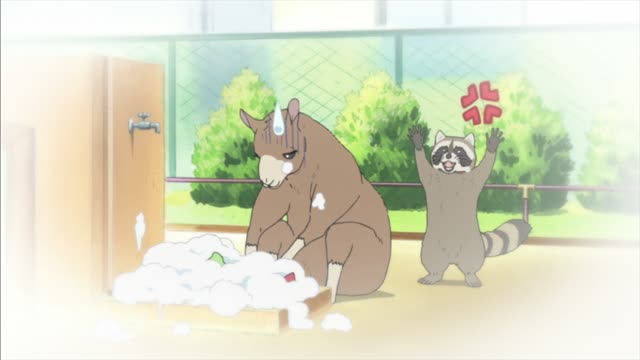
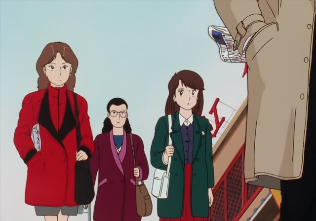
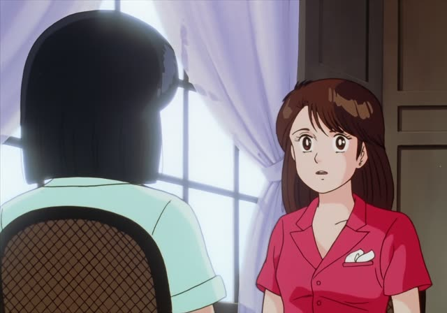
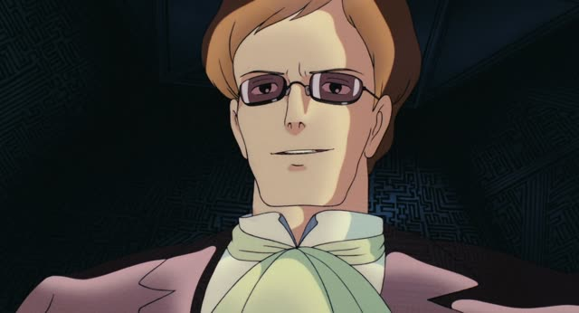

Causative-passive form
| Polite | ～させられます |
|---|---|
| Casual | ～させられる る-verbs・～される う-verbs, short form: 待たされる |
Same meaning: "be made to do it (and you didn't want to)". Only the politeness changes.

Shirokuma Cafe · Episode 49
洗い物をさせられたラマです。
"I'm the llama who was made to do the dishes."
The causative-passive means "be made to do it": someone forced you, and you didn't like it. する → させられる. う-verbs usually take the short form: 待つ → 待たされる, 払う → 払わされる.
On this card, a llama introduces himself to Shirokuma: the one who always got made to wash up. です makes it polite.
It always sounds like a small complaint.

Oishinbo · Episode 13
ホントッ、お勘定だけ払わされてさ。
"Seriously, we just got stuck paying the bill."
On this card, the reporters complain about a bad restaurant. 払う → 払わされる: made to pay.
Quick Examples
Your friend was late.
３０分も待たされたよ。
"I was kept waiting for thirty minutes."
待つ → 待たされる.
CasualTalking about your school days.
毎日掃除をさせられました。
"We were made to clean every day."
PoliteYour boss loves karaoke.
また歌わされた。
"I got made to sing again."
歌う → 歌わされる.
CasualA kid complains.
嫌いな野菜を食べさせられました。
"I was made to eat vegetables I hate."
る-verb: 食べさせられる.
PoliteWith and without
３０分待った。
"I waited thirty minutes." Maybe by choice.
３０分待たされた。
"I was kept waiting thirty minutes." Someone made you.
Examples from Media
Kotaro Lives Alone · Episode 10
無理やり契約させられたんすよね？
"They forced you into the contract, right?"
すよね = casual ですよね.
Shirokuma Cafe · Episode 26
国内線の乗り換えで待たされちゃってさぁ。
"I got stuck waiting for my domestic connection."

Oishinbo · Episode 33
労働させられた後のビールは最高だね。
"Beer after being made to work is the best."
Odd Taxi · Episode 9
こうやって介護までさせられてよお。
"And now I'm stuck taking care of you too."
Aggretsuko · Season 2, Episode 3
俺が始末書書かされるんだぞ。
"I'm the one who'll have to write the incident report."
書く → 書かされる.
Samurai Champloo · Episode 10
結局、私が尻拭いさせられんじゃん。
"In the end, I'm the one stuck cleaning up the mess."
させられん = させられる, slurred.

Castle in the Sky
君のアホ面には心底うんざりさせられる。
"Your stupid face makes me sick to my core."
うんざりさせられる: be made fed up.
Vinland Saga · Episode 23
先王ハラルドが苦汁をなめさせられた
"where the late King Harald was made to taste bitter defeat"